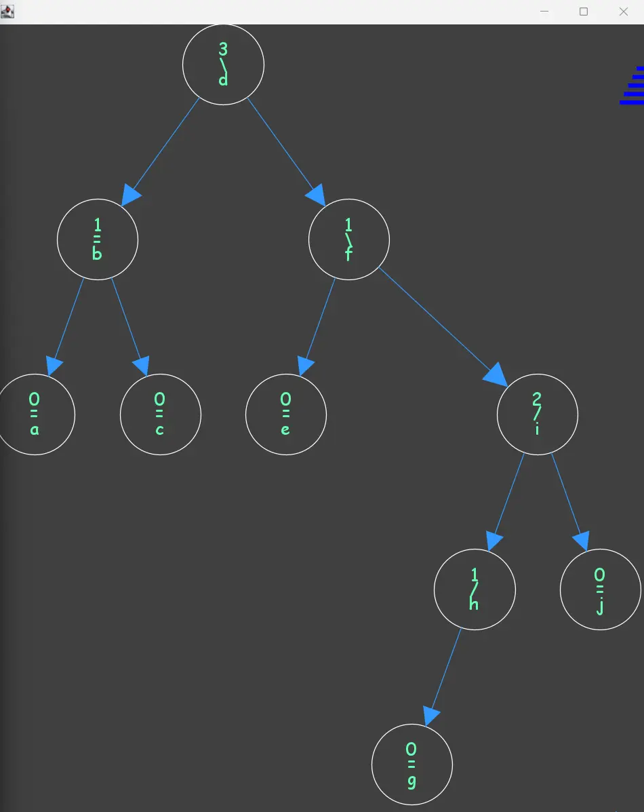

Created a new complex data structure in Java similar to an AVL tree. Collaborated with a teammate to finish several milestones on time for three weeks. Practiced planning out high-level design for a programming project before implementing code.
Used Java in the Eclipse IDE.

Minecraft Mod
Developing a Minecraft mod in Java with various items, blocks, and entities. Players can obtain items and utilize entities to their advantage throughout player progression. Gaining experience in analyzing a big programming project and adding onto it